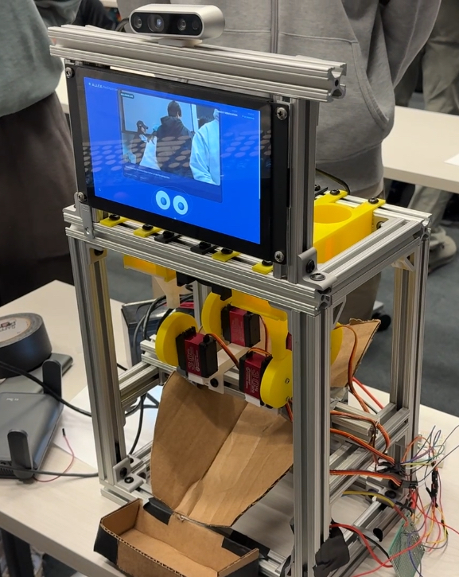
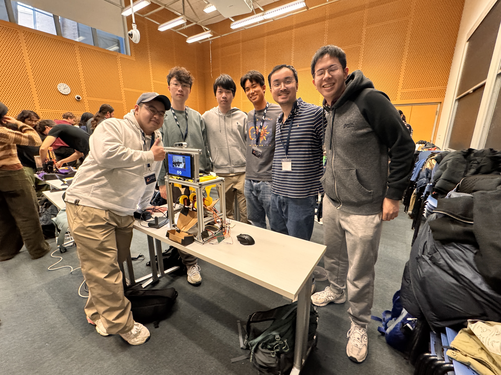
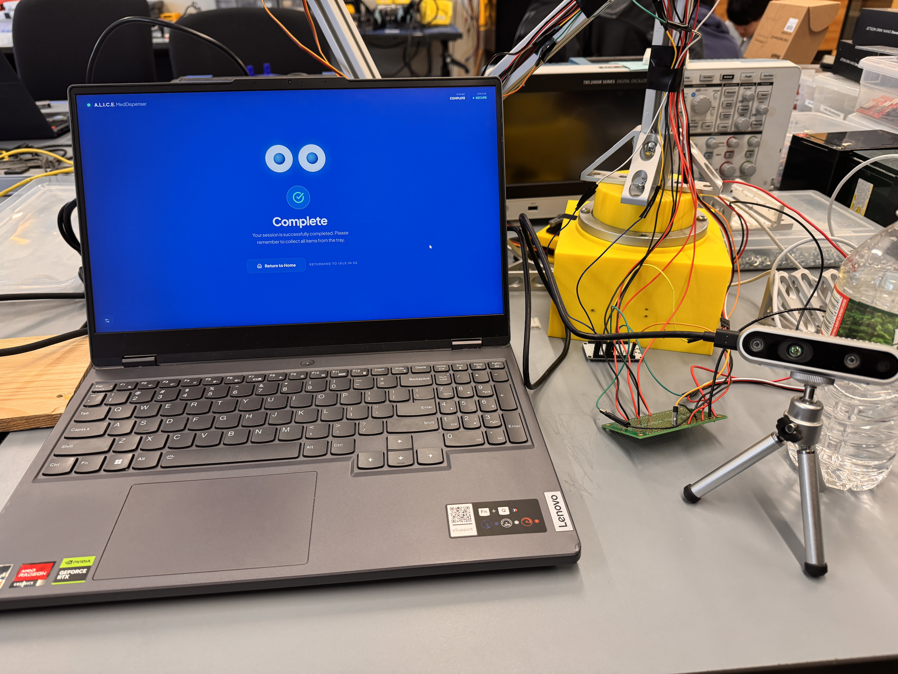

ALICE
AI Life Improvement & Care Expert
MakeMIT x Harvard 2026 Project
Project Description
ALICE is a local-first AI smart pill dispenser created to help people manage multiple medications more safely at home. The project combined guided dispensing, embedded hardware, and AI-assisted workflows to make medication management feel more private, reliable, and supportive.
I worked on the system during MakeMIT x Harvard 2026, where the pace was fast and every part of the stack had to come together quickly. My role focused on turning the idea into a working product by strengthening the software-hardware connection and improving real-time responsiveness.
My Responsibilities
- Developed backend APIs to support AI-assisted medication workflows for the frontend.
- Researched and integrated Gemini API capabilities into the project stack.
- Worked on low-level hardware integration with ESP32.
- Optimized the system for more reliable real-time performance.
Skills I Learned
- Rapid prototyping under hackathon timelines.
- AI API integration for health-oriented workflows.
- Embedded integration and performance tuning with ESP32.
- Full-stack coordination between device behavior and frontend user flows.
Project Links
Photos


